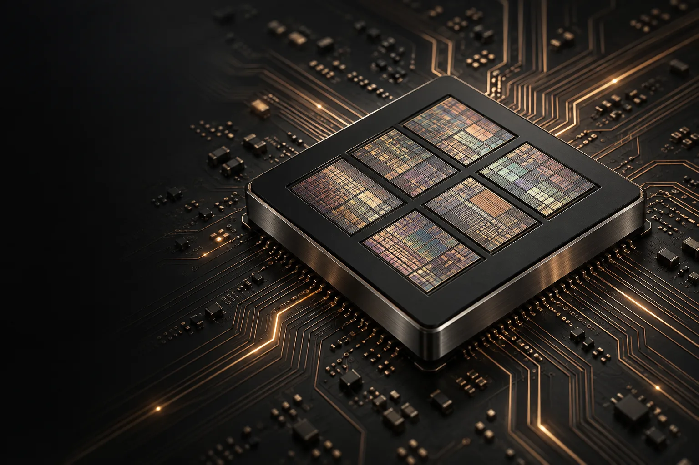
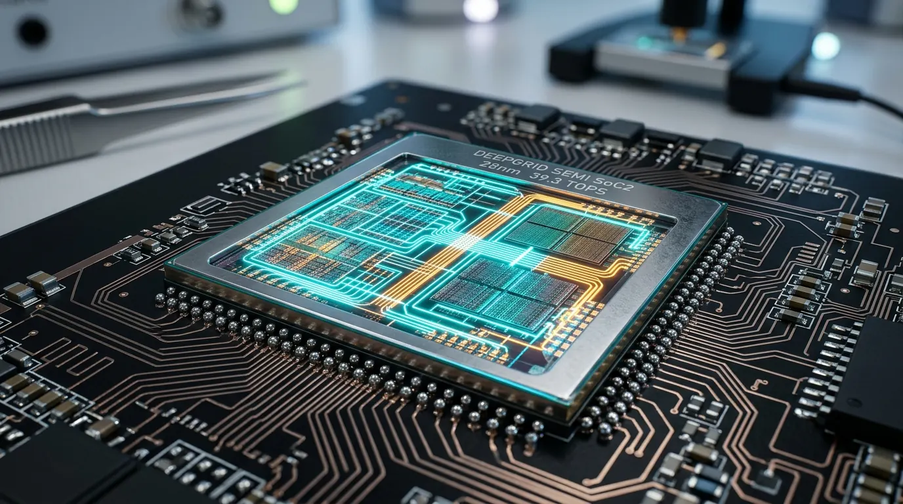
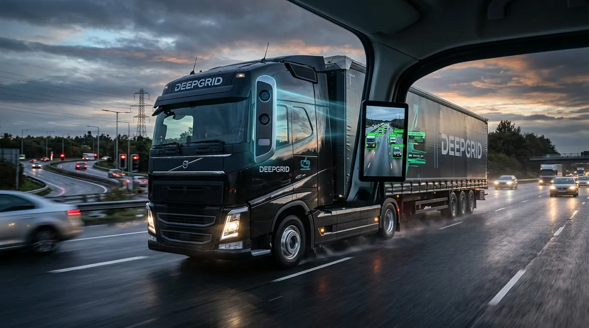
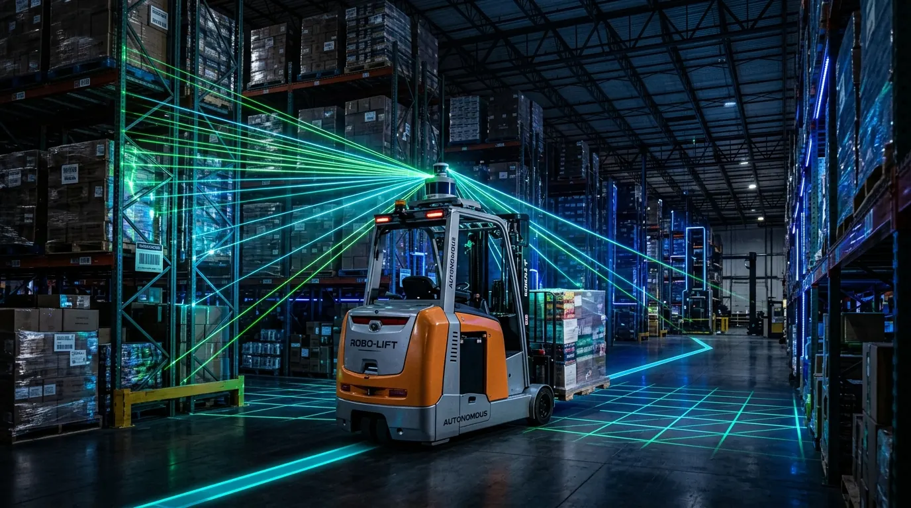
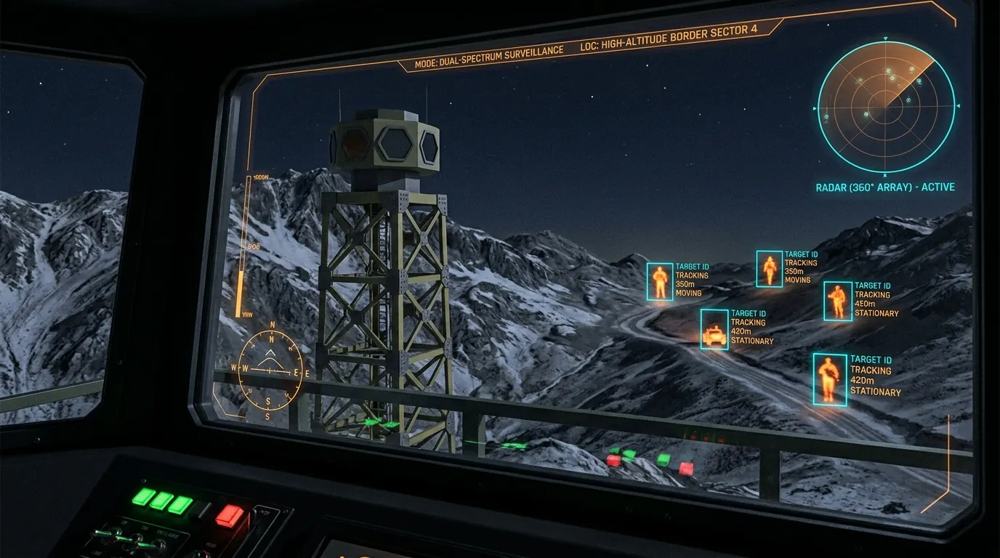
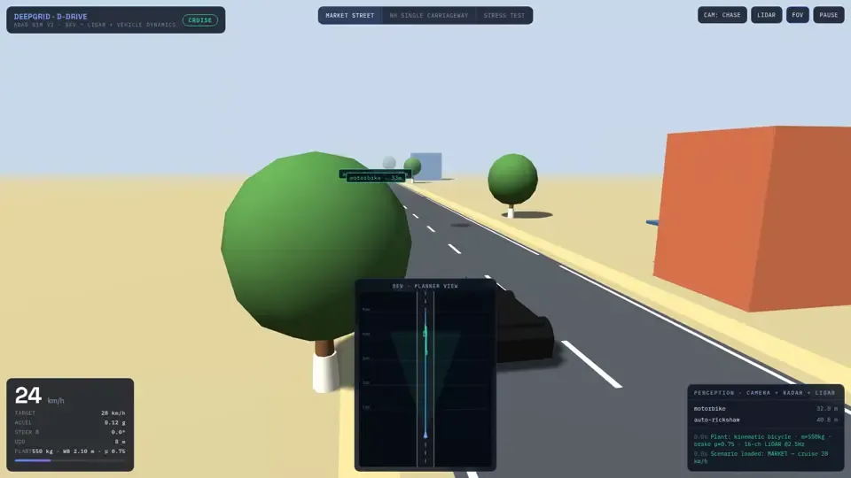
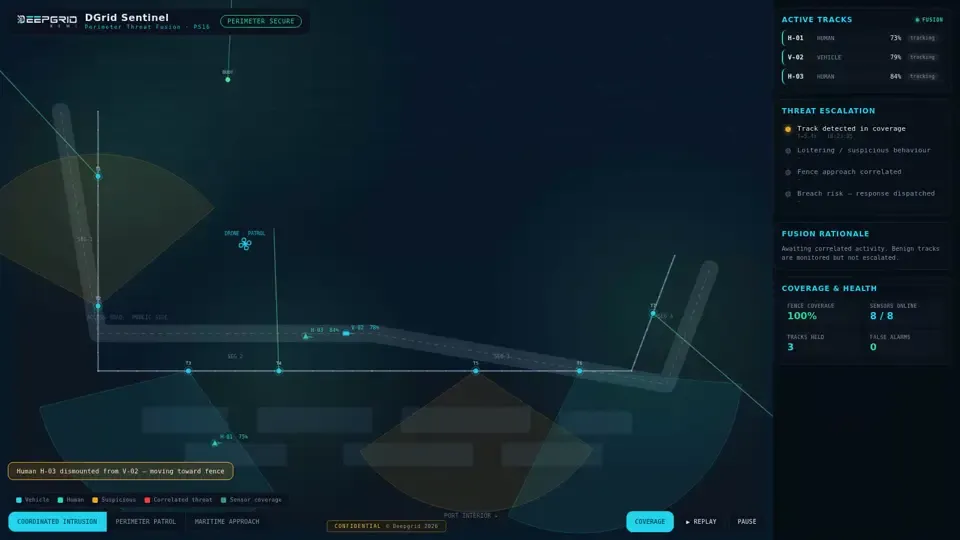
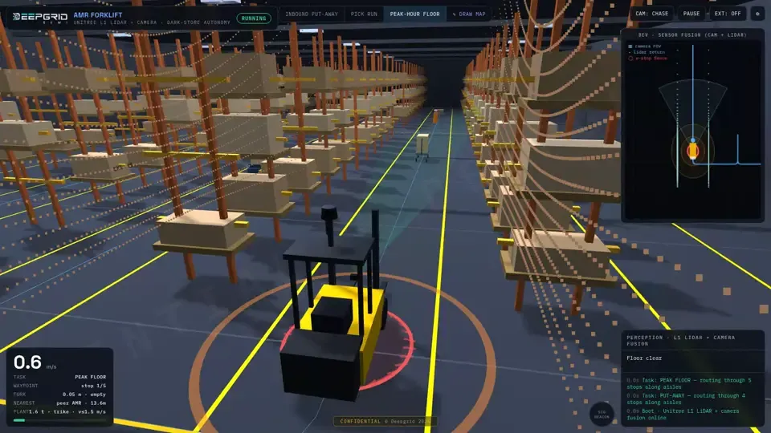
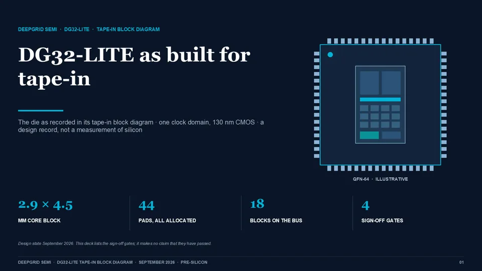

One silicon.
Infinite possibilities.
DeepGrid designs the chip under its own autonomous systems. One 28 nm die carries fifteen products across trucks, fleets, defence and sensing, built in Hyderabad for a market India has written into law.
Architectural rendering
- products on one die
- 15
- target TSMC process
- 28 nm
- planned die area
- 57 mm²
- sensor fusion target
- 8.6 ms
- TOPS design target
- 39.3

Four places the chip goes to work.
The same die drives a truck on the highway, a hauler in a port, a forklift in an aisle and a tower on a border. Each scene below is a product line you can open.

HighwaysSmart Truck (AD2 kit) · AD0 Smart Mirror- Seaports and yardsSeaport AGV · Autonomous TaaS

Warehouses and plantsAD1 Indoor L4 Kit
Borders and basesDefence D-HUMR · D100 Drone SoC Kit · Thermal Camera Pod
Concept renders, not photographs of shipped hardware.
Why now
The demand is written into law.
In November 2025 India made five driver-assistance systems compulsory on every truck and bus. Each date below is a deadline with a rule number behind it. None of them is a forecast.
Source: G.S.R. 834(E), 11 November 2025, as amended by G.S.R. 862(E). Management sizes the pool at about one million units a year: 500,000 new vehicles and 500,000 retrofits.
One die. Six businesses.
Each compute domain on SoC2 is a product line in its own right. Firmware decides which ones a product switches on, so one tapeout serves every buyer.
Parallel perception for camera feeds and edge-AI workloads. The core compute in every AD kit.
Two clocks.
The FPGA product fills the gap. It ships from Q3 2026, earns while the ASIC is qualified, and runs the same software.
The law
- Rules notified in the Gazette
- Emergency braking on new truck and bus models
- Braking on every model. Warnings on new models
- All four warning systems on every model
The silicon
- FPGA validated at 40 fps. First defence revenue
- FPGA kit ships. 100-unit fleet pilot
- First 28 nm silicon from TSMC
- Qualified silicon
Law: G.S.R. 834(E) and 862(E). Silicon: Information Memorandum, June 2026, sections 8 and 12. Silicon dates are management plans.
It already runs.
The perception stack is working on hardware today, the patents are filed and the shuttle is contracted. What the round buys is the step from a working FPGA to production silicon.
40fps
YOLOv11n on an Artix-7 FPGA, 24.8 ms latency
Measured on hardware, not simulated
15patents
Provisional filings, March 2026
Batch-dispatch firmware, 12-bit radar, health processor
130nm
Earlier tapeout completed at SkyWater
Six RTL designs now tapeout-ready for 28 nm
96.7%
Predicted yield on the contracted 28 nm shuttle
Muse / GSME multi-project wafer, 79-day fab cycle
Source: Information Memorandum, June 2026, section 8. Management figures, not independently verified.
Visual records below show software simulations and a separate DG32 design. They do not verify the hardware performance figures above.

D-Drive perceptionCamera, radar and LiDAR fused on a market street. Software demonstrator.
Sentinel threat fusionTracks correlated along a perimeter fence. Software demonstrator.
Warehouse autonomyLiDAR and camera guiding a forklift down a rack aisle. Software demonstrator.
DG32-LITE at 130 nmSeparate DG32 programme. Tape-in design record, not evidence of fabricated SoC2 silicon.
₹45 Cr to take the chip from FPGA to silicon.
Equity at a ₹204 Cr pre-money valuation for 18.07%, plus a ₹10 Cr collateral-free CGTMSE facility for working capital. The tapeout money is released in four gates, and each gate is a point where the next payment can be withheld.